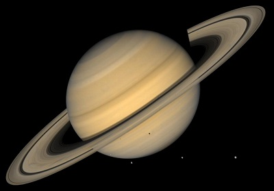

Сатурн  Сатурн – небесное тело, названное именем римского бога земледелия и времени. На самом деле, не только Сатурн обладает кольцами. Они есть у всех газовых гигантов, но не у всех хорошо видны. Как у и Юпитера, у Сатурна нет твердой коры, а в составе преобладают водород и гелий. Имеет ядро из железа, льда и никеля, покрытое жидким металлическим водородом. Верхние слои Сатурна состоят из гидросульфата аммония, гелия, воды в жидком состоянии и водорода. По составу химических элементов именно Сатурн ближе других планет Солнечной системы к небесному светилу. Как и Юпитер и Земля, он обладает выраженным магнитным полем. Сатурн имеет немало спутников: сейчас ученым известно 62. Самыми крупными его спутниками являются Титан и Ио, причем первый имеет собственную атмосферу. Если перечислять все планеты Солнечной системы по порядку с указанием их размеров и плотности, то окажется что, несмотря на гигантскую величину, плотность Сатурна самая маленькая и даже меньше плотности обычной воды. Сатурн в цифрах: средний радиус – 57 350 км; год длится немногим меньше 30 земных лет; сутки – 10 часов 30 минут; температура поверхности составляет -180˚С; скорость ветра достигает 1800 км/ч.